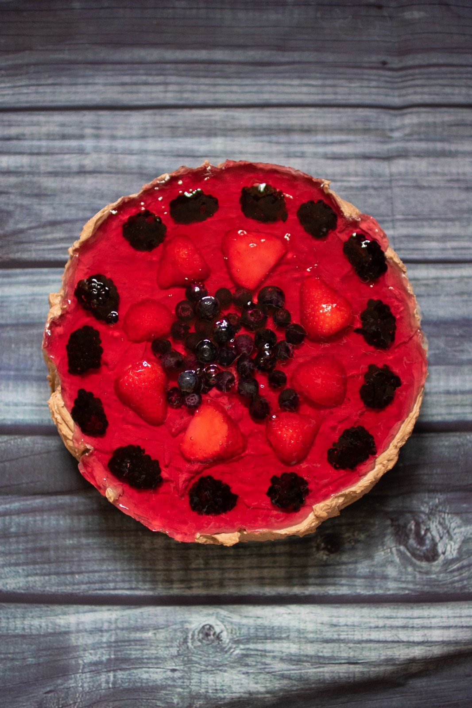

Assignment 2 - Allan, Aurelia and Maira
Think about yourself
By Aurelia Luczcsxxasxzs

Introduction
- We should write an introduction
- heeheeheehee
- hahaha
- Method -
- Crush the digestive biscuits and mix with the melted butter and 1 tablespoon of the caster sugar. Press into a 18cm (7 in) cake tin and refrigerate.
- Whip cream until soft peak stage. Add cooled melted chocolate, then the cocoa powder mix. Blend well and set aside.
- Beat the cream cheese and remaining sugar together. Fold in cream/chocolate mixture and mix thoroughly.
- Spread into tin on top of crushed biscuits. Freeze for one hour.
- Refrigerate for about 30 minutes.
- Decorate with fruit and jelly, refrigerate until jelly is set, then serve and enjoy!